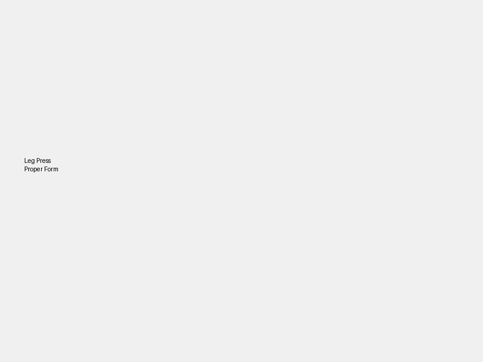
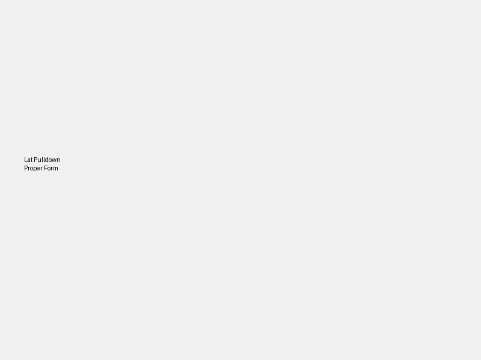
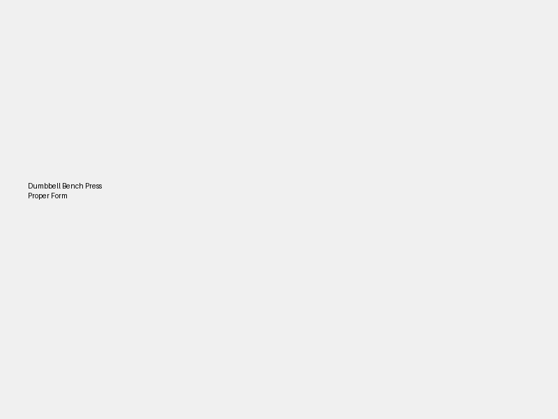
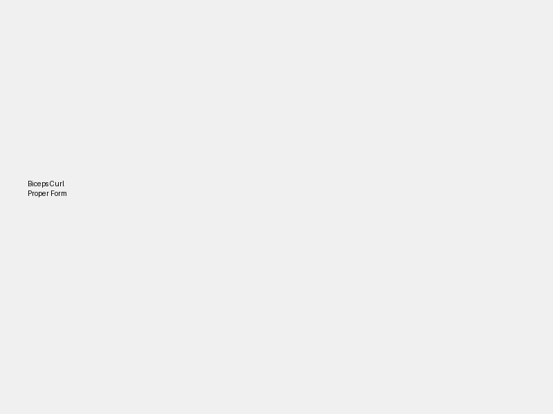
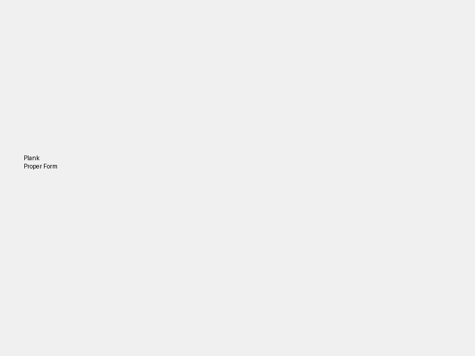

Простой и безопасный план тренировок для новичка в тренажёрном зале.
Формат: Full Body • Длительность: ~30 минут • Частота: через день
Пример расписания:
Пн – Ср – Пт – Вс – …

Жим ногами: стопы на платформе, спина прижата, движение плавное.

Тяга верхнего блока: тяни к верхней части груди, без раскачки.

Жим гантелей: лопатки сведены, локти под контролем, не бросай вес.

Бицепс: локти рядом с корпусом, без рывков и раскачки.

Планка: корпус прямой, ягодицы не провисают, шея нейтрально.
Лёгкая растяжка ног, спины и рук — 2–3 минуты
| Упражнение | Стартовый вес |
|---|---|
| Жим ногами | 50–70 кг |
| Присед с гантелями | 8–10 кг |
| Тяга верхнего блока | 30–40 кг |
| Жим гантелей лёжа | 8–10 кг |
| Бицепс | 6–8 кг |
| Трицепс (блок) | 20–25 кг |
| Планка | 30–40 сек |
Белок: 110–140 г / день
Вода: 2–2,5 л
Приёмы пищи: 3–4 в день
✔ Эта страница — твой личный тренировочный план